Trinn 1: Bli kjent med hvordan dette funker
Hvis du trykker på «Launch Project» vil spillet starte, med fargetemaet du valgte istad.


Hvis du nå trykker på «Start» burde dette komme opp.
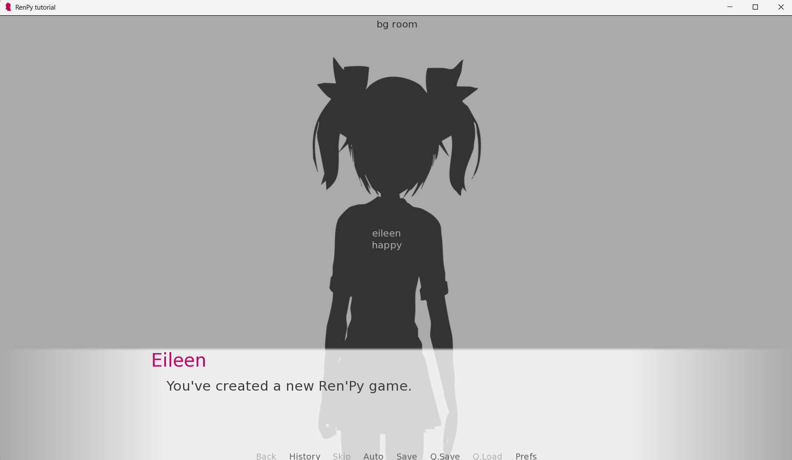Trinn 2: Bli kjent med kodingen
Hvis du nå går tilbake til startsiden av Ren’Py Launcher og trykker på «Open Project» (tekst i oransj), skal du få opp koden som ligger i «script.py».
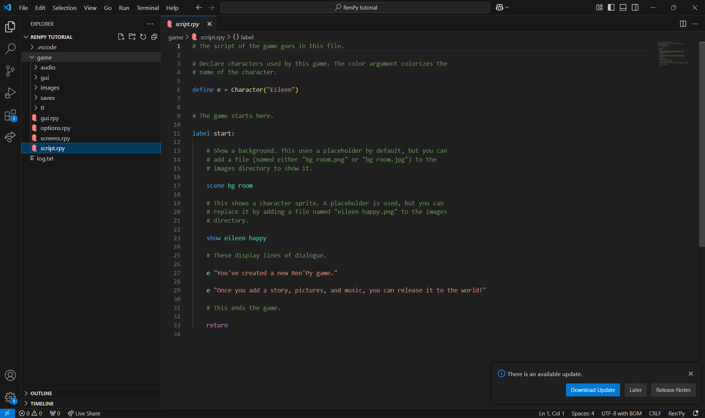Hvis du ser nærmere på koden, kan du se dialogen du nettopp leste da du åpnet spillet.
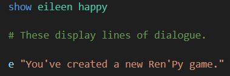Trinn 3: Mappestruktur
Først og fremst er det viktig at du har en ryddig og strukturert mappe. Klikk på «Images».
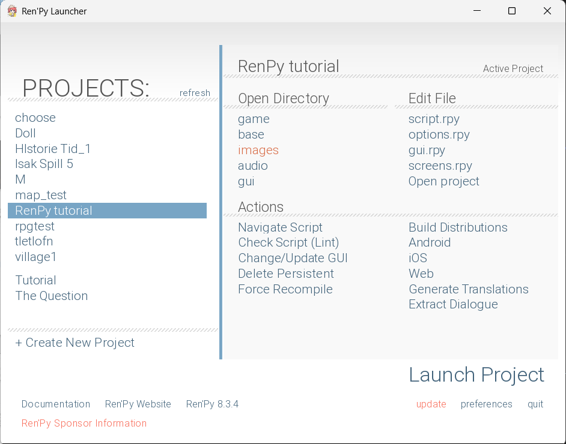Inne dær lager du 2 mapper «Characters» og «Backgrounds». Når du begynner å lage større spill med flere elementer er det lurt å dele dem opp i mapper for å finne frem raskere.
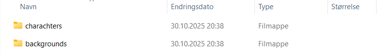 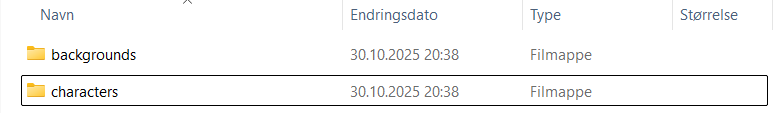
Får nå trenger du bare 2 bilder av samme karakter med 2 forskjellige ansiktsutrykk inna på «Images». Når du gir disse bildene navn er det lurt å kalle dem en forkortet versjonen av navnet til karakteren og ansiktsutrykket de lager i bildet.
Inne på «Backgrounds» kan du og putte bilde du vil ha som bakgrunn.
Trinn 4: Start å kode dialogen din
Nå som du har bildene dine klar kan du gå tilbake til «script.rpy» og begynne å kode. På toppen ser du at det står define e = Character("Eileen") og under, før hvær dialog hun sier står det e.
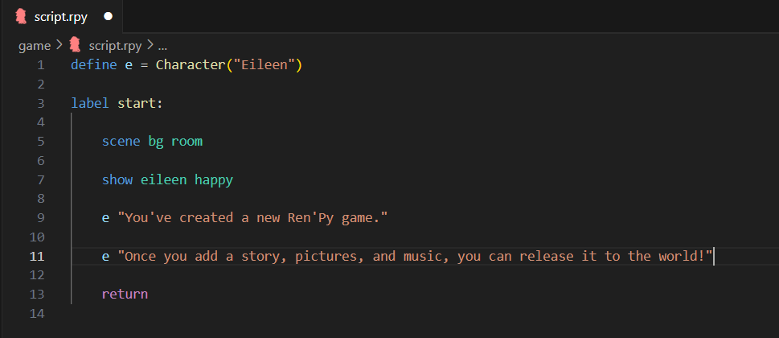Vi kan starte med å bytte det ut med forbokstaven til karakteren din og navnet demmers. Hvis du har flere karakterer du vil inklDet gjør det sånn at du bare trenger å skrive forbokstaven til karakteren som snakker. Når spillet ditt blir lengre og du må skrive mer dialog kommer dette til å bli veldig nyttig.
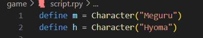Det gjør det sånn at du bare trenger å skrive forbokstaven til karakteren som snakker. Når spillet ditt blir lengre og du må skrive mer dialog kommer dette til å bli veldig nyttig.
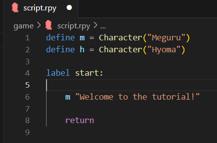(Dette er hvordan koden ser ut nå)
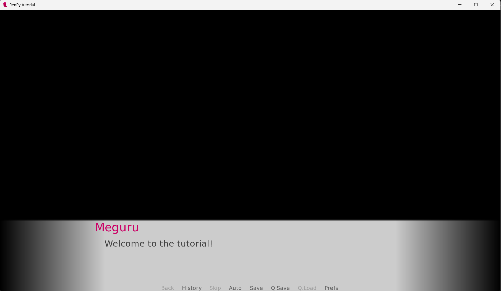Trinn 5: Bytt det ut med ditt eget bilde
Vi kan først begynne med å putte inn bakgrunnen din. Alt du trenger er scene bildet_ditt.
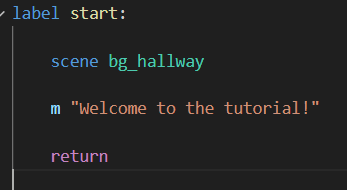 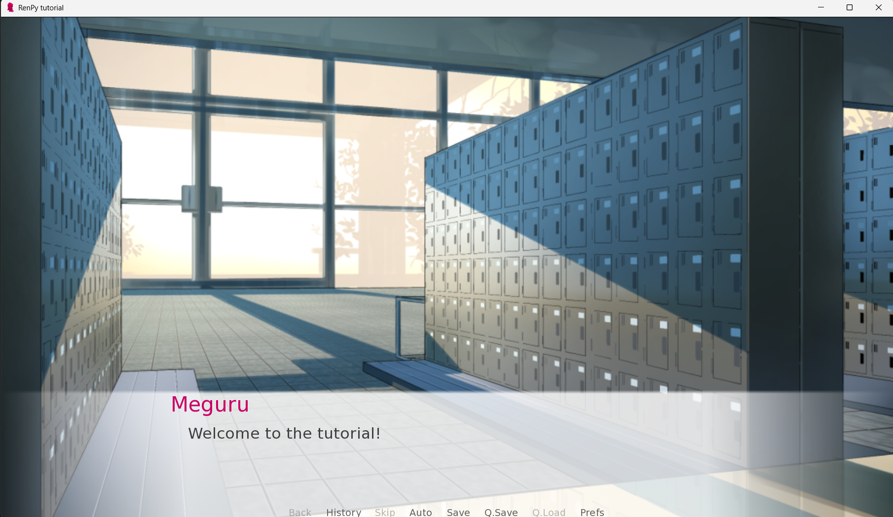Prøv først å skrive inn koden show bildet_ditt.
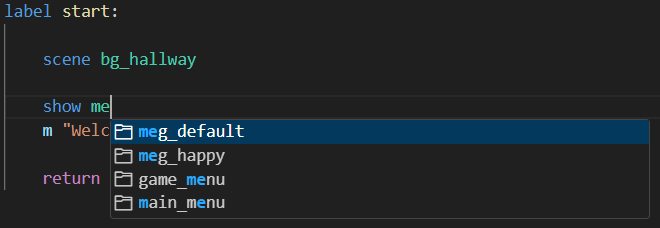Da kan det hende at bildet ditt kommer opp slikt:
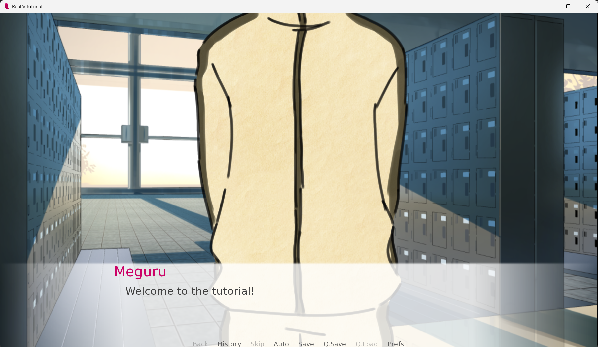Hvis det ser greit ut kan du hoppe over resten og dra til neste del.
Trinn 6: Justere størrelse
Under define e = Character("Eileen") (eller det du byttet det ut med) skriver du inn denne koden.
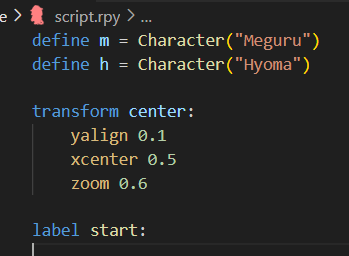Så går du ned til show bildet_ditt og skriver at center etter det.
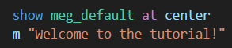Da ble bildet mitt fikset. Hvis det fortsatt er for stort, høys eller lavt justerer du størrelse ved å bytte nummeret på zoom og høyde på yalign.
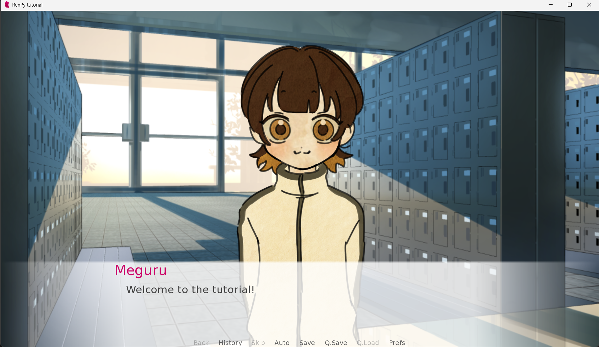💡 Mini-quiz: Hva husker du?
1. Hva heter filen der dialogen ligger i standardprosjektet?
2. Hvordan skal mappene dine se ut?
3. Hva er grunnen for koden define e = Character("Eileen")?